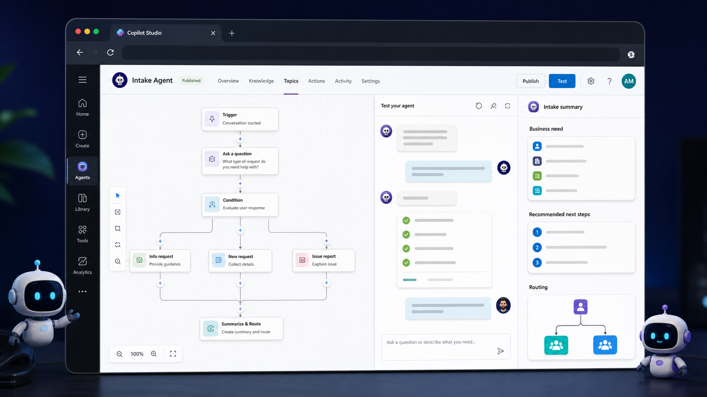
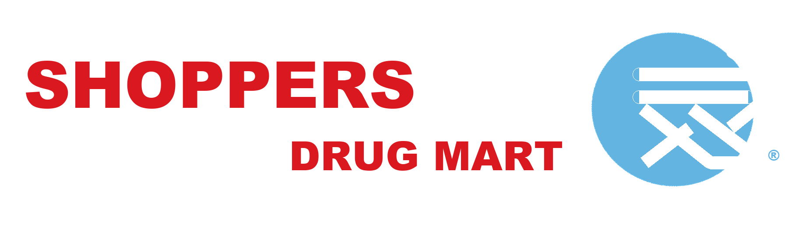

Arslan MalekPower Apps, Copilot Studio & Enterprise Automation
About
I design governed Power Platform products, AI agents, and automation systems that help enterprise teams replace manual work with secure, measurable digital workflows.
My experience spans Intact Financial, BMO, Nestlé Canada, Loblaw Companies, and Shoppers Drug Mart, where I have delivered Power Apps, Copilot Studio agents, Power Automate flows, Dynamics 365 extensions, Power Pages portals, Dataverse models, Power BI dashboards, and Azure/Snowflake data pipelines.
The through-line is practical architecture: solution design documents, reusable components, role-based security, Center of Excellence (COE) kits to govern the platform, ALM, compliance review, and mentoring citizen developers so the platform scales without becoming chaotic.
Skills
Microsoft business application skills shaped around architecture, delivery, governance, and AI-enabled automation.
Projects
Selected work examples shaped for Power Platform, Power Apps, and Copilot Studio roles.
Project filter activePower Apps
AI-Enabled HR Onboarding Platform
Power Apps
Copilot Studio
Dataverse
Power BI
Architected an HR onboarding product with a Copilot Studio agent as the front door for new-hire questions, guided next steps, task support, approvals, and adoption insights.
Click to view app screenshots, architecture, workflow details, and skills used.
COVID-19 Pay Protection Tracker Power App
Power Apps
Power BI
HR Operations
Rapid Delivery
Built a 3-week emergency tracker for HR and store admins to capture COVID leave records, eligibility details, and pay protection reporting without purchasing an external vendor tool.
Click to view reporting, entry, records, and delivery impact.

Copilot Studio Intake Agent
Copilot Studio
Power Automate
Request Triage
ServiceNow Process
Replaced a manual intake process with an agent that asks targeted business-analysis questions, summarizes requests, and gives the delivery team clearer next steps.
Click to view impact estimates, intake autonomy, and the screenshot note.
Power Platform CoE Governance & ALM
CoE Kit
DLP Policies
Power BI
Azure DevOps
Set up and maintained CoE capabilities across enterprise tenants to govern apps, flows, agents, DLP policies, maker support, Power BI monitoring, and platform value.
Click to view governance model, DLP guardrails, reports, and nurture program.
Legacy App
RPA Bot
Snowflake
Power BI
RPA Reporting Automation
Power Automate RPA
Cloud Flows
Snowflake
Power BI
Automated sensitive health-data extraction from legacy insurance systems into Snowflake and reduced manual claims data entry through Power App, Cloud Flow, and RPA handoffs.
Click to view reporting pipeline, claims-entry automation, and labor savings.
Role-based access active
Dynamics 365 / Power Pages Field Service Portal
Dynamics 365
Power Pages
Dataverse Security
Web Roles
Built a secure inspection portal where maintenance inspectors logged store-building issues, then admin teams reviewed deficiencies in Dynamics 365 and routed repair work.
Click to view inspection workflow, admin review, and repair request handoff.
Experience
Select each role to view achievements, delivery highlights, and impact.
Nov 2023Present
Power Platform Architect & Consultant
Intact Financial
Led enterprise automation programs across claims, intake, reporting, and legacy system modernization.
Developed and deployed 8 enterprise Power Apps, including desk booking, incident request submission, and claims support notes apps.
Automated intake with Copilot Studio acting as an intake analyst and request summarizer for cleaner triage.
Designed 5 RPA solutions using Power Automate Desktop to extract legacy reports into Azure Blob Storage and Snowflake.
Created Power BI reporting across Snowflake, SQL, and Dataverse while supporting sensitive-data requirements.
Jul 2022Oct 2023
Power Platform Architect & Consultant
BMO
Designed HR-focused AI and Power Platform solutions that improved onboarding, service delivery, and enterprise data access.
Developed custom ChatGPT solutions integrated with Snowflake for enterprise data questions.
Created AI agents to support HR teams and new hires with onboarding queries and guidance.
Delivered Power Apps, Dynamics 365 customizations, C# plug-ins, workflows, business rules, and process flows.
Established reusable components and advised stakeholders on governance, security, compliance, and delivery best practices.
Nov 2020Jun 2022
Power Platform Architect & Consultant
Nestlé Canada
Built governed Power Platform delivery practices with CoE oversight, solution architecture, and maker enablement.
Defined and implemented a Power Platform Center of Excellence and governance roadmap.
Created solution blueprints, technical documents, security reviews, and compliance-aligned architecture materials.
Delivered 16 cross-functional solutions across Power Apps, Power Automate, Power BI, and SharePoint.
Supported citizen developers through workshops, best practices, and ongoing governance oversight.
Mar 2019Oct 2020
Power Apps Consultant
Loblaw Companies Limited
Delivered compliance-focused applications, secure integrations, and adoption support across a large retail enterprise.
Spearheaded Power Platform adoption across a large enterprise workforce.
Built a compliance solution with Power Apps and Power Automate tied to mitigating a potential $10M in penalties.
Integrated Salesforce, Jira, SharePoint, Microsoft 365, and legacy systems using APIs, custom connectors, JavaScript, Python, PowerShell, and web services.
Designed Dataverse models, security roles, approvals, workflow automation, reporting, and self-service experiences.
Jan 2018Feb 2019

System Analyst
Shoppers Drug Mart
Improved operational reporting, reconciliation, and exception tracking through automation and analytics.
Automated reconciliation and reporting processes using Power Automate, PowerShell, Excel VBA, Power Query, and advanced Excel.
Designed workflow solutions for data collection, approvals, exception tracking, reconciliation follow-ups, and operational task management.
Developed Power BI dashboards connected to Access, Excel, and business data sources.
Mapped business processes through workflow diagrams and process documentation to identify automation opportunities.
Power AppsCopilot StudioDataverseAutomatePower BIGovernance
Power Apps case study
AI-Enabled HR Onboarding Platform
A centralized onboarding application with a Copilot Studio agent that helps HR, managers, and new hires understand next steps, answer onboarding questions, and manage requests, task ownership, escalations, employee lookups, and process visibility from one governed Power Platform experience.
What the app does
The app gives onboarding teams a single place to start new hire requests, view current work, review escalations, search for employees, and see the process flow. The Copilot agent acts like a friendly onboarding assistant: it answers common questions, explains what needs to happen next, and routes users toward the right task or request path.
For new hiresA Copilot agent explains onboarding steps and reduces repeated HR support questions.For HR and operationsClear task queues, escalations, search, and process visibility.For managersStructured onboarding data captured consistently across teams.For platform governanceRole-aware design, reusable data model, and controlled app behavior.
Home screen
The home page separates everyday actions into simple zones: current activity, new records, and search. Users can quickly find their tasks, escalations, new hire requests, reporting, and process views without needing to understand the underlying data tables.
Data model
The model connects Teams, Users, Employees, Task Frames, and Task Data. In plain English: teams own the onboarding task templates, users and employees provide people context, and task data tracks who needs to do what during onboarding.
Task update screen
The task screen guides the user through onboarding steps with a left-side progress path, a central form, contextual field information, and save/submit actions. This design helps users complete work accurately while giving support teams clear process status.
Skills highlighted
Power Apps: designed the user interface, navigation, forms, task screens, and business-user experience.
Copilot Studio: designed the onboarding assistant to answer common questions, guide users to the right next step, and support self-service intake.
Dataverse: structured the data model for employees, users, teams, task frames, and assigned task records.
Power Automate: supported notifications, approvals, and workflow handoffs behind the app experience.
Power BI: enabled overview reporting and process visibility for onboarding status.
Governance: documented architecture, data model, process flow, security controls, and platform considerations.
Power AppsPower BIGovernance
Power Apps case study
COVID-19 Pay Protection Tracker Power App
A rapid-response HR operations app built during COVID-19 to track employees on approved leave, validate pay protection eligibility details, and give leaders a clear view of employees needing protected pay across banners and regions.
What the app does
During COVID-19, HR and local store admins needed a fast way to record employees who were on leave for government-recognized reasons, such as illness, COVID-related leave, caregiving, or other approved situations. The app captured the required leave, employee, site, pay frequency, and return-to-work details so teams could determine whether someone met pay protection eligibility requirements.
Rapid COVID responseDelivered in 3 weeks to meet an urgent operational need during unprecedented conditions.Reporting firstHighlighted employees on leave and needing pay protection by company, banner, and region.Store admin workflowLocal admins could enter leave records, update key fields, and review existing employee records.Cost avoidanceHelped avoid buying an external vendor tool by delivering a tailored internal Power Platform solution.
Fast silent demo
This sped-up preview condenses the original demo into the key moments: reviewing records, updating employee leave details, saving the request, and checking the reporting dashboard.
Auto-playing silent GIF preview, shortened from the full demo video.
Reporting screen
The reporting screen was the executive view: it showed total employees on leave, regional totals, and the population needing pay protection review. This made it easier for HR leaders to see the scale of the program and act quickly during a fast-moving COVID response.
Entry screen
HR and store admins used the entry screen to capture employee information, site number, leave dates, pay frequency, contact status, and return-to-work information. In plain terms, this was the controlled intake form for eligibility review.
View records screen
The records view let users search and review employees already entered into the tracker, including leave reason, estimated last day of leave, contacted status, and action links for follow-up.
Skills highlighted
Power Apps: built the intake, edit, and record review experience for HR and local admins under a rapid timeline.
Power BI: created additional reporting to show employees on leave, pay protection volume, and regional/banner-level trends.
Business analysis: translated government eligibility rules and HR process needs into structured data capture.
Governance: designed a controlled internal tool for sensitive employee leave and pay-related data.
Delivery impact: delivered the app in 3 weeks and avoided the need to purchase an external vendor tracking solution.
Copilot StudioPower AppsAutomateGovernance
Copilot Studio case study
Copilot Studio Intake Agent
A guided request intake experience that replaced manual review and a high-maintenance ServiceNow form with a Copilot Studio agent and Power Platform-owned intake flow. The agent collects better context, summarizes the request, and gives the delivery team cleaner next steps before work begins.
Impact highlights
Reduced manual reviewSaved an estimated 2 hours of daily request review. At $110/hour and 260 business days, that is about $57,200 in annual effort avoided.ServiceNow update cost avoidedReplacing a continuously updated ServiceNow form avoided roughly 40 hours per update at $300/hour, 3 times per year: about $36,000 annually.Estimated annual valueThe two measurable benefits together represent about $93,200 in annualized effort and update cost avoidance.Team autonomyThe team could update questions, branching logic, and form behavior directly in Power Platform instead of waiting on external ServiceNow configuration work.
Screenshot reminder
Add the sanitized Intake Power App screenshot here once available, so this case study can show the exact front-end intake experience beside the Copilot agent.
What the agent does
The agent asks targeted business-analysis questions, captures the reason for the request, clarifies urgency and impacted users, summarizes the ask, and prepares the delivery team with enough context to triage faster. The Power App intake layer made the front-end request experience easier to customize, while Copilot Studio handled guided conversation, summarization, and routing support.
Skills highlighted
Copilot Studio: designed the conversational intake flow, request clarification prompts, and summary behavior.
Power Apps: replaced the rigid ServiceNow form with a team-owned intake app that could evolve faster.
Power Automate: supported request routing, notifications, and downstream handoffs.
Business analysis: translated intake review pain points into measurable savings and a cleaner request process.
Governance: kept the intake experience structured, maintainable, and easier to update without vendor dependency.
CoE KitPower BIAutomateDataverse
Governance & ALM case study
Power Platform CoE Governance & ALM
A governance operating model built around the Center of Excellence kit, DLP policies, Power BI monitoring, maker support, and ALM practices. I set up and kept CoE capabilities updated across environments for Nestlé, Loblaw Companies Limited, BMO, and Intact Financial so admins could see what existed, who owned it, what was risky, and where support was needed.
What I governed
The CoE setup gave admins a governed way to review apps, flows, agents, environments, owners, sharing, usage, connectors, orphaned resources, licensing risk, and support needs. A major focus was finding assets that had quietly become business-critical, such as apps or flows shared with more than 20 users without a known support model.
Core inventoryUsed CoE core components to review apps, flows, agents, makers, connectors, ownership, sharing, and activity across environments.DLP guardrailsCreated data policies to stop risky connector combinations, rogue HTTP requests, and unapproved connector usage from exposing company data.Risk monitoringUsed Power BI monitor reports to identify licensing exposure, orphaned apps, environment growth, and unmanaged assets.Maker nurtureHosted biweekly support sessions and maintained a SharePoint knowledge site for beginner guidance, platform FAQs, and premium license request links.
Power BI monitor
The monitor view made environment growth, apps, flows, makers, connector risk, licensing exposure, and orphaned assets easier to review with leaders and platform admins.
Skills highlighted
CoE Kit: set up, configured, maintained, and updated CoE kit components across multiple enterprise tenants.
DLP and security: defined connector policy guardrails to reduce data leakage risk from HTTP, custom connectors, and unapproved connectors.
Power BI: used CoE dashboards to monitor environments, app/flow usage, orphaned assets, licensing risk, and maker activity.
ALM: supported governed delivery using Azure DevOps, pipelines, solution promotion, documentation, and environment strategy.
Data platform: connected platform governance practices with Azure Data Factory, reporting datasets, and operational monitoring needs.
Nurture program: ran biweekly office hours and built SharePoint knowledge content for beginners, support paths, and premium licensing guidance.
Legacy Insurance
Power Automate RPA
Snowflake
Power BI
RPAPower AppsPower BIGovernance
Automation case study
RPA Reporting Automation
A pair of Power Automate RPA solutions for insurance operations: one extracted sensitive health data from legacy insurance systems into Snowflake for Power BI claims reporting, and another copied call-summary data from a Power App into a legacy claims system after agent calls ended.
What the automation did
The reporting automation pulled sensitive health data from legacy insurance systems and loaded it into Snowflake, where claims data could be modeled and surfaced through Power BI reports. A second automation supported insurance agents during customer calls: agents captured key information in a Power App, a Cloud Flow ran after the call ended, and Power Automate RPA copied the structured data into the legacy claims system.
Weekly reporting savingsSaved a full day of manual labor every week by automating legacy extraction and reporting data movement.Daily claims-entry savingsSaved about 2 hours daily by reducing repeated manual entry after hundreds of agent calls.Legacy modernizationConnected older insurance systems to Snowflake and Power BI without forcing a full system replacement.Sensitive data handlingSupported health and claims data movement with structured automation instead of ad hoc manual handling.
Skills highlighted
Power Automate RPA: automated repetitive extraction and data-entry steps across legacy insurance systems.
Power Apps: gave agents a structured place to capture call details before automation moved the data downstream.
Cloud Flows: triggered post-call handoffs and moved captured data into the right staging table.
Snowflake and Power BI: centralized claims data for reporting and analytics.
Governance: reduced manual handling of sensitive health and claims data through controlled automation.
Inspection issue logged
DataversePower AppsGovernance
Dynamics 365 case study
Dynamics 365 / Power Pages Field Service Portal
A secure inspection portal for maintenance inspectors responsible for store locations. Inspectors used the portal to log building issues, while admin teams reviewed deficiencies in Dynamics 365 and coordinated repair requests to keep locations ready for maintenance inspections.
What the portal supported
Maintenance inspectors used the portal during building inspections at store locations. They could record issues such as outdated logo color needing repainting, improper storage of goods, roof issues, and other inspection-related deficiencies. Admin teams then reviewed the logged issues inside Dynamics 365 and created repair follow-ups so stores could be fixed and pass maintenance inspections.
Inspector entryMaintenance inspectors captured issues directly in the portal while reviewing store conditions.Admin reviewAdmin teams reviewed submitted issues in Dynamics 365 and confirmed deficiencies.Repair follow-upDeficiencies were converted into repair requests so stores could be brought back into inspection-ready condition.Controlled accessPortal access, record visibility, and data updates were governed through Dataverse security and web roles.
Skills highlighted
Power Pages: built the external-facing portal experience for maintenance inspectors.
Dynamics 365: supported admin review, deficiency management, and operational follow-up.
Dataverse: structured inspection issue data, relationships, security roles, and controlled record access.
Business process design: translated inspection findings into a repair-request workflow.
Governance: protected building and store inspection data with role-aware access and controlled updates.